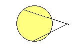

Secant
A line that intersects a curve or circle at two points
(See also Secant (sec) function in a right triangle - trigonometry).
Try this Drag either orange dot. The blue line will always remain a secant to the circle,
except that if the two points coincide, the secant becomes a
tangent.
The blue line in the figure above is called the "secant to the circle c".
As you move one of the points P,Q, the secant will change accordingly.
If the two points coincide at the same point, the secant becomes a
tangent,
since it now touches the circle at just one point.
The line segment inside the circle between P and Q is called a chord.
Intersecting Secants

As shown in the figure on the right, when two secants intersect at a point outside the circle,
there is an interesting relationship between the line segments thus formed.
See Intersecting Secants Theorem for a detailed explanation.
Other definitions
In trigonometry, the secant of an angle in a right triangle is the ratio of the hypotenuse to the adjacent side.
The reciprocal of cosine. See Secant (sec) function in a right triangle - trigonometry.
Other circle topics
General
Equations of a circle
Angles in a circle
Arcs
(C) 2011 Copyright Math Open Reference.
All rights reserved